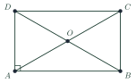
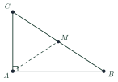
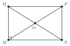
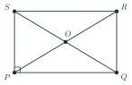
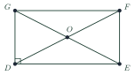
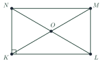
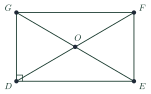
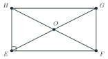

RectanglesHình chữ nhật
Grade 8 · Topic: QuadrilateralsLớp 8 · Chủ đề: Tứ giác
1Lesson IntroductionGiới thiệu bài học
Learning goalsMục tiêu bài học
By the end of this lesson you can:
Sau bài học này, em có thể:
recognize a rectangle and use its properties (equal diagonals that bisect each other);
nhận biết được hình chữ nhật và sử dụng tính chất: hai đường chéo bằng nhau và cắt nhau tại trung điểm mỗi đường;
use the tests for a rectangle;
dùng được các dấu hiệu nhận biết hình chữ nhật;
use the fact that the median to the hypotenuse of a right triangle is half the hypotenuse.
vận dụng được tính chất đường trung tuyến ứng với cạnh huyền của tam giác vuông bằng nửa cạnh huyền.
2Mathematical VocabularyTừ vựng Toán học
rectangle – a quadrilateral with four right angles.
Hình chữ nhật – tứ giác có bốn góc vuông.
congruent diagonals – diagonals of equal length.
Hai đường chéo bằng nhau.
median / hypotenuse – the segment from a vertex to the midpoint of the opposite side / the side opposite the right angle.
Đường trung tuyến / cạnh huyền – đoạn nối một đỉnh với trung điểm cạnh đối diện / cạnh đối diện với góc vuông.
3Useful English PhrasesCụm từ tiếng Anh thường gặp
Use the diagram to identify the four right angles of rectangle \(ABCD\).
Dựa vào hình, chỉ ra bốn góc vuông của hình chữ nhật \(ABCD\).
Determine whether parallelogram \(EFGH\) is a rectangle.
Xác định hình bình hành \(EFGH\) có phải hình chữ nhật không.
A parallelogram with one right angle is a rectangle. A parallelogram with congruent diagonals is a rectangle.
Hình bình hành có một góc vuông là hình chữ nhật. Hình bình hành có hai đường chéo bằng nhau là hình chữ nhật.
Since \(M\) is the midpoint of hypotenuse \(BC\) in right triangle \(ABC\), \(M\) is equidistant from \(A\), \(B\) and \(C\).
Vì \(M\) là trung điểm cạnh huyền \(BC\) của tam giác vuông \(ABC\) nên \(M\) cách đều \(A\), \(B\), \(C\).
4Prerequisite ReviewÔn tập kiến thức nền
Parallelogram (Lesson 12). Its diagonals bisect each other; consecutive angles are supplementary.
Hình bình hành (Bài 12). Hai đường chéo cắt nhau tại trung điểm mỗi đường; hai góc kề một cạnh bù nhau.
5TheoryLý thuyết
5.1 Definition and propertiesĐịnh nghĩa và tính chất
DefinitionĐịnh nghĩa
A rectangle is a quadrilateral with four right angles. A rectangle is both a parallelogram and an isosceles trapezoid.
Hình chữ nhật là tứ giác có bốn góc vuông. Hình chữ nhật vừa là hình bình hành, vừa là hình thang cân.
Property: the diagonals of a rectangle are equal and bisect each other: \(AC=BD\), \(OA=OB=OC=OD\).
Tính chất: hai đường chéo của hình chữ nhật bằng nhau và cắt nhau tại trung điểm của mỗi đường: \(AC=BD\), \(OA=OB=OC=OD\).

5.2 Tests for a rectangleDấu hiệu nhận biết hình chữ nhật
A quadrilateral is a rectangle if…Tứ giác là hình chữ nhật nếu…
1) it has three right angles; 2) it is an isosceles trapezoid with a right angle; 3) it is a parallelogram with a right angle; 4) it is a parallelogram with equal diagonals.
1) có ba góc vuông; 2) là hình thang cân có một góc vuông; 3) là hình bình hành có một góc vuông; 4) là hình bình hành có hai đường chéo bằng nhau.
5.3 Application to right trianglesÁp dụng vào tam giác vuông
Median to the hypotenuseĐường trung tuyến ứng với cạnh huyền
In a right triangle, the median to the hypotenuse is half the hypotenuse. Conversely, if the median from \(A\) is half of \(BC\), then triangle \(ABC\) is right-angled at \(A\).
Trong tam giác vuông, đường trung tuyến ứng với cạnh huyền bằng nửa cạnh huyền. Ngược lại, nếu đường trung tuyến kẻ từ \(A\) bằng nửa cạnh \(BC\) thì tam giác \(ABC\) vuông tại \(A\).

Watch out!Lưu ý
A quadrilateral with equal diagonals is not always a rectangle: it must first be a parallelogram (diagonals bisect each other).
Tứ giác có hai đường chéo bằng nhau chưa chắc là hình chữ nhật: trước hết nó phải là hình bình hành (hai đường chéo cắt nhau tại trung điểm mỗi đường).
6Worked ExamplesVí dụ có lời giải
ExampleVí dụ 1RememberingNhận biết – Diagonals of a rectangleĐường chéo hình chữ nhật
Rectangle \(ABCD\) has diagonals meeting at \(O\) and \(AC=10\) cm. Find \(BD\), \(OA\), \(OB\).
Hình chữ nhật \(ABCD\) có hai đường chéo cắt nhau tại \(O\), \(AC=10\) cm. Tính \(BD\), \(OA\), \(OB\).
Analysis: Equal diagonals that bisect each other.
Phân tích: Hai đường chéo bằng nhau và cắt nhau tại trung điểm mỗi đường.
\(BD=AC=10\) cm; \(OA=OB=10:2=5\) cm.
\(BD=AC=10\) cm; \(OA=OB=10:2=5\) cm.
\(BD=10\) cm, \(OA=OB=5\) cm.
\(BD=10\) cm, \(OA=OB=5\) cm.
ExampleVí dụ 2UnderstandingThông hiểu – Which is a rectangle?Hình nào là hình chữ nhật?
a) Parallelogram \(EFGH\) has \(\widehat{E}=90^\circ\).
b) Quadrilateral \(KLMN\) has \(\widehat{K}=\widehat{L}=\widehat{M}=90^\circ\).
c) Quadrilateral \(PQRS\) has \(PR=QS\). Which are surely rectangles?
a) Hình bình hành \(EFGH\) có \(\widehat{E}=90^\circ\).
b) Tứ giác \(KLMN\) có \(\widehat{K}=\widehat{L}=\widehat{M}=90^\circ\).
c) Tứ giác \(PQRS\) có \(PR=QS\). Hình nào chắc chắn là hình chữ nhật?
Analysis: Compare with the tests.
Phân tích: Đối chiếu với các dấu hiệu.
a) Yes (parallelogram with a right angle).
b) Yes (three right angles).a) Đúng (hình bình hành có một góc vuông). b) Đúng (tứ giác có ba góc vuông).
c) Not necessarily: an isosceles trapezoid also has equal diagonals.
c) Chưa chắc: hình thang cân cũng có hai đường chéo bằng nhau.
a) and b).
a) và b).
ExampleVí dụ 3UnderstandingThông hiểu – Median to the hypotenuseTrung tuyến ứng với cạnh huyền
Triangle \(ABC\) is right-angled at \(A\), \(BC=13\) cm, \(M\) is the midpoint of \(BC\). Find \(AM\).
Tam giác \(ABC\) vuông tại \(A\), \(BC=13\) cm, \(M\) là trung điểm của \(BC\). Tính \(AM\).
Analysis: Draw the rectangle \(ABDC\) with \(M\) the meeting point of the diagonals.
Phân tích: Vẽ hình chữ nhật \(ABDC\) có \(M\) là giao điểm hai đường chéo.
\(AM=\dfrac{BC}{2}=6.5\) cm.
\(AM=\dfrac{BC}{2}=6{,}5\) cm.
\(AM=6.5\) cm.
\(AM=6{,}5\) cm.
ExampleVí dụ 4Basic applicationVận dụng thấp – Diagonals with xĐường chéo có ẩn x
The diagonals of quadrilateral \(PQRS\) meet at \(T\); \(PT=TR=2x+1\), \(QT=TS=x+4\) (cm). Find \(x\) so that \(PQRS\) is a rectangle; then find its diagonals.
Hai đường chéo của tứ giác \(PQRS\) cắt nhau tại \(T\); \(PT=TR=2x+1\), \(QT=TS=x+4\) (cm). Tìm \(x\) để \(PQRS\) là hình chữ nhật; tính độ dài hai đường chéo.
Analysis: Diagonals bisect each other → parallelogram; equal diagonals → rectangle.
Phân tích: Hai đường chéo cắt nhau tại trung điểm → hình bình hành; hai đường chéo bằng nhau → hình chữ nhật.
Need \(PR=QS\), i.e. \(2x+1=x+4\Rightarrow x=3\).
Cần \(PR=QS\), tức là \(2x+1=x+4\Rightarrow x=3\).
Then \(PR=QS=2\cdot7=14\) cm.
Khi đó \(PR=QS=2\cdot7=14\) cm.
\(x=3\); diagonals 14 cm.
\(x=3\); hai đường chéo dài 14 cm.
ExampleVí dụ 5ApplicationVận dụng – Checking a door frameKiểm tra khung cửa
A carpenter makes a door frame with opposite sides \(2\) m and \(0.9\) m. How can he check that the corners are right angles using only a tape measure?
Người thợ làm khung cửa có các cạnh đối dài \(2\) m và \(0{,}9\) m. Chỉ dùng thước dây, làm sao kiểm tra các góc của khung đều vuông?
Analysis: Opposite sides equal → parallelogram.
Phân tích: Các cạnh đối bằng nhau → hình bình hành.
With equal opposite sides, the frame is a parallelogram.
Các cạnh đối bằng nhau nên khung là hình bình hành.
Measure the two diagonals: if they are equal, the parallelogram is a rectangle, so all corners are right angles.
Đo hai đường chéo: nếu bằng nhau thì hình bình hành đó là hình chữ nhật, mọi góc đều vuông.
Check that the two diagonals are equal.
Kiểm tra hai đường chéo có bằng nhau không.
7PracticeBài tập luyện tập
A. Multiple ChoiceA. Trắc nghiệm nhiều lựa chọn
Rectangle \(MNPQ\) has diagonals meeting at \(O\) and \(MP=6\) cm. Find \(NQ\) and \(OM\).

Hình chữ nhật \(MNPQ\) có hai đường chéo cắt nhau tại \(O\) và \(MP=6\) cm. Tính \(NQ\) và \(OM\).
Answer: a. The diagonals of a rectangle are equal and bisect each other.
Đáp án a. Hai đường chéo của hình chữ nhật bằng nhau và cắt nhau tại trung điểm mỗi đường.
Triangle \(MNP\) is right-angled at \(M\), with hypotenuse \(NP=12\) cm. \(I\) is the midpoint of \(NP\). Find \(MI\).
Tam giác \(MNP\) vuông tại \(M\), cạnh huyền \(NP=12\) cm. \(I\) là trung điểm của \(NP\). Tính \(MI\).
Answer: c. The median to the hypotenuse is half the hypotenuse: \(12:2=6\) cm.
Đáp án c. Đường trung tuyến ứng với cạnh huyền bằng nửa cạnh huyền: \(12:2=6\) cm.
Which of these is a test for a rectangle?
Đâu là một dấu hiệu nhận biết hình chữ nhật?
Answer: d. Tests: three right angles; a parallelogram with a right angle or equal diagonals; an isosceles trapezoid with a right angle.
Đáp án d. Dấu hiệu: tứ giác có ba góc vuông; hình bình hành có một góc vuông hoặc hai đường chéo bằng nhau; hình thang cân có một góc vuông.
B. True or FalseB. Đúng hoặc sai
A quadrilateral with perpendicular diagonals is always a rectangle.
Tứ giác có hai đường chéo vuông góc luôn là hình chữ nhật.
False. Check the tests for a rectangle.
Sai. Đối chiếu với các dấu hiệu nhận biết hình chữ nhật.
Rectangle \(EFGH\) has diagonals meeting at \(O\), and \(OE=12\) cm. Then \(OF=24\) cm.
Hình chữ nhật \(EFGH\) có hai đường chéo cắt nhau tại \(O\), \(OE=12\) cm. Khi đó \(OF=24\) cm.
False. \(OE=OF=OG=OH=12\) cm.
Sai. \(OE=OF=OG=OH=12\) cm.
C. Short AnswerC. Trả lời ngắn
Triangle \(PQR\) is right-angled at \(P\); the median from \(P\) has length 16 cm. Find the hypotenuse \(QR\) (cm).
Tam giác \(PQR\) vuông tại \(P\), đường trung tuyến kẻ từ \(P\) dài 16 cm. Tính cạnh huyền \(QR\) (cm).
Enter a number.
Nhập một số.
Answer: 32. Hypotenuse \(=2\cdot16=32\) cm.
Đáp số: 32. Cạnh huyền \(=2\cdot16=32\) cm.
Rectangle \(ABCD\) has diagonals \(AC=3x+3\) and \(BD=5x-13\) (cm). Find \(x\).
Hình chữ nhật \(ABCD\) có hai đường chéo \(AC=3x+3\), \(BD=5x-13\) (cm). Tìm \(x\).
Enter a number.
Nhập một số.
Answer: 8. Equal diagonals: \(3x+3=5x-13\Rightarrow x=8\).
Đáp số: 8. Hai đường chéo bằng nhau: \(3x+3=5x-13\Rightarrow x=8\).
D1. Self-practice – RememberingD1. Tự luyện – Mức Nhận biết
What makes a quadrilateral a rectangle by definition?
Theo định nghĩa, tứ giác là hình chữ nhật khi nào?
Answer: b. Definition: four right angles.
Đáp án b. Định nghĩa: tứ giác có bốn góc vuông.
In rectangle \(PQRS\), the diagonals meet at \(O\). Which equality is always true?

Hình chữ nhật \(PQRS\) có hai đường chéo cắt nhau tại \(O\). Đẳng thức nào luôn đúng?
Answer: b. Equal diagonals bisecting each other.
Đáp án b. Hai đường chéo bằng nhau và cắt nhau tại trung điểm mỗi đường.
The diagonals of a rectangle…
Hai đường chéo của hình chữ nhật
Answer: a. Rectangle: equal diagonals that bisect each other.
Đáp án a. Hình chữ nhật: hai đường chéo bằng nhau và cắt nhau tại trung điểm mỗi đường.
D2. Self-practice – UnderstandingD2. Tự luyện – Mức Thông hiểu
Rectangle \(MNPQ\) has diagonals meeting at \(O\) and \(\widehat{NMP}=56^\circ\). Find \(\widehat{MNQ}\).
Hình chữ nhật \(MNPQ\) có hai đường chéo cắt nhau tại \(O\) và \(\widehat{NMP}=56^\circ\). Tính \(\widehat{MNQ}\).
Answer: d. \(OM=ON\) so \(\triangle OMN\) is isosceles: \(\widehat{MNQ}=\widehat{NMP}=56^\circ\).
Đáp án d. \(OM=ON\) nên \(\triangle OMN\) cân tại \(O\): \(\widehat{MNQ}=\widehat{NMP}=56^\circ\).
Triangle \(PQR\) is right-angled at \(P\), \(QR=14\) cm, and \(M\) is the midpoint of \(QR\). Find the perimeter of triangle \(PQM\) if \(PQ=8\) cm.
Tam giác \(PQR\) vuông tại \(P\), \(QR=14\) cm, \(M\) là trung điểm của \(QR\). Tính chu vi tam giác \(PQM\), biết \(PQ=8\) cm.
Answer: b. \(PM=QM=7\) cm, so the perimeter is \(7+7+8=22\) cm.
Đáp án b. \(PM=QM=7\) cm nên chu vi \(=7+7+8=22\) cm.
Rectangle \(IJKL\) has \(IJ=15\) cm and \(JK=8\) cm. Find its area.
Hình chữ nhật \(IJKL\) có \(IJ=15\) cm, \(JK=8\) cm. Tính diện tích của nó.
Answer: b. \(15\cdot8=120\).
Đáp án b. \(15\cdot8=120\).
D3. Self-practice – Basic applicationD3. Tự luyện – Mức Vận dụng thấp
The diagonals \(KM\) and \(LN\) of quadrilateral \(KLMN\) meet at \(O\), with \(OK=OM=3x+7\), \(OL=ON=2x+14\) (cm). Find \(x\) so that \(KLMN\) is a rectangle.
Hai đường chéo \(KM\), \(LN\) của tứ giác \(KLMN\) cắt nhau tại \(O\), \(OK=OM=3x+7\), \(OL=ON=2x+14\) (cm). Tìm \(x\) để \(KLMN\) là hình chữ nhật.
Answer: d. It is a parallelogram (diagonals bisect each other); it is a rectangle when the diagonals are equal: \(3x+7=2x+14\Rightarrow x=7\).
Đáp án d. Tứ giác là hình bình hành (hai đường chéo cắt nhau tại trung điểm mỗi đường); là hình chữ nhật khi hai đường chéo bằng nhau: \(3x+7=2x+14\Rightarrow x=7\).
Quadrilateral \(IJKL\) has \(\widehat{I}=\widehat{J}=\widehat{K}=90^\circ\). What kind of quadrilateral is it?
Tứ giác \(IJKL\) có \(\widehat{I}=\widehat{J}=\widehat{K}=90^\circ\). Tứ giác đó là hình gì?
Answer: d. Three right angles give a rectangle.
Đáp án d. Tứ giác có ba góc vuông là hình chữ nhật.
Triangle \(ABC\) is right-angled at \(A\) with \(\widehat{B}=48^\circ\). \(M\) is the midpoint of \(BC\). Find \(\widehat{AMC}\).
Tam giác \(ABC\) vuông tại \(A\) có \(\widehat{B}=48^\circ\), \(M\) là trung điểm của \(BC\). Tính \(\widehat{AMC}\).
Answer: b. \(MA=MB\), so \(\widehat{MAB}=\widehat{B}=48^\circ\) and the exterior angle \(\widehat{AMC}=2\cdot48^\circ=96^\circ\).
Đáp án b. \(MA=MB\) nên \(\widehat{MAB}=\widehat{B}=48^\circ\); góc ngoài \(\widehat{AMC}=2\cdot48^\circ=96^\circ\).
D4. Self-practice – Advanced applicationD4. Tự luyện – Mức Vận dụng
A door frame has opposite sides of equal length. A carpenter measures its two diagonals: 211 cm and 214 cm. Is the frame a rectangle?
Một khung cửa có các cạnh đối bằng nhau. Người thợ đo hai đường chéo được 211 cm và 214 cm. Khung cửa có phải hình chữ nhật không?
Answer: a. Equal opposite sides → parallelogram; it is a rectangle exactly when the diagonals are equal.
Đáp án a. Các cạnh đối bằng nhau → hình bình hành; nó là hình chữ nhật khi và chỉ khi hai đường chéo bằng nhau.
A garden has the shape of a right triangle whose hypotenuse is 10 m long. A lamp is placed so that it is equally far from the three corners. How far is it from each corner?
Một khu vườn có dạng tam giác vuông với cạnh huyền dài 10 m. Người ta đặt một bóng đèn cách đều ba góc vườn. Bóng đèn cách mỗi góc bao xa?
Answer: c. The midpoint of the hypotenuse is equally far from the three vertices: \(10:2=5\) m.
Đáp án c. Trung điểm cạnh huyền cách đều ba đỉnh: \(10:2=5\) m.
Students mark a rectangular football field with ropes: two pairs of opposite sides of 54 m and 67 m. Which extra check ensures that the corners are right angles?
Học sinh căng dây để kẻ một sân bóng hình chữ nhật: hai cặp cạnh đối dài 54 m và 67 m. Cần kiểm tra thêm điều gì để chắc chắn các góc sân đều vuông?
Answer: d. Equal opposite sides give a parallelogram; equal diagonals make it a rectangle.
Đáp án d. Các cạnh đối bằng nhau cho ta hình bình hành; hai đường chéo bằng nhau thì nó là hình chữ nhật.
A. Multiple ChoiceA. Trắc nghiệm nhiều lựa chọn
Rectangle \(DEFG\) has diagonals meeting at \(O\) and \(DF=10\) cm. Find \(EG\) and \(OD\).

Hình chữ nhật \(DEFG\) có hai đường chéo cắt nhau tại \(O\) và \(DF=10\) cm. Tính \(EG\) và \(OD\).
Answer: d. The diagonals of a rectangle are equal and bisect each other.
Đáp án d. Hai đường chéo của hình chữ nhật bằng nhau và cắt nhau tại trung điểm mỗi đường.
Triangle \(MNP\) is right-angled at \(M\), with hypotenuse \(NP=20\) cm. \(I\) is the midpoint of \(NP\). Find \(MI\).
Tam giác \(MNP\) vuông tại \(M\), cạnh huyền \(NP=20\) cm. \(I\) là trung điểm của \(NP\). Tính \(MI\).
Answer: b. The median to the hypotenuse is half the hypotenuse: \(20:2=10\) cm.
Đáp án b. Đường trung tuyến ứng với cạnh huyền bằng nửa cạnh huyền: \(20:2=10\) cm.
Which condition is enough to conclude that a figure is a rectangle?
Điều kiện nào đủ để kết luận một hình là hình chữ nhật?
Answer: a. Tests: three right angles; a parallelogram with a right angle or equal diagonals; an isosceles trapezoid with a right angle.
Đáp án a. Dấu hiệu: tứ giác có ba góc vuông; hình bình hành có một góc vuông hoặc hai đường chéo bằng nhau; hình thang cân có một góc vuông.
B. True or FalseB. Đúng hoặc sai
A parallelogram with one right angle is always a rectangle.
Hình bình hành có một góc vuông luôn là hình chữ nhật.
True. Check the tests for a rectangle.
Đúng. Đối chiếu với các dấu hiệu nhận biết hình chữ nhật.
Rectangle \(DEFG\) has diagonals meeting at \(O\), and \(OD=5\) cm. Then \(OE=10\) cm.
Hình chữ nhật \(DEFG\) có hai đường chéo cắt nhau tại \(O\), \(OD=5\) cm. Khi đó \(OE=10\) cm.
False. \(OD=OE=OF=OG=5\) cm.
Sai. \(OD=OE=OF=OG=5\) cm.
C. Short AnswerC. Trả lời ngắn
Triangle \(DEF\) is right-angled at \(D\); the median from \(D\) has length 7 cm. Find the hypotenuse \(EF\) (cm).
Tam giác \(DEF\) vuông tại \(D\), đường trung tuyến kẻ từ \(D\) dài 7 cm. Tính cạnh huyền \(EF\) (cm).
Enter a number.
Nhập một số.
Answer: 14. Hypotenuse \(=2\cdot7=14\) cm.
Đáp số: 14. Cạnh huyền \(=2\cdot7=14\) cm.
Rectangle \(KLMN\) has diagonals \(KM=3x+8\) and \(LN=5x-2\) (cm). Find \(x\).
Hình chữ nhật \(KLMN\) có hai đường chéo \(KM=3x+8\), \(LN=5x-2\) (cm). Tìm \(x\).
Enter a number.
Nhập một số.
Answer: 5. Equal diagonals: \(3x+8=5x-2\Rightarrow x=5\).
Đáp số: 5. Hai đường chéo bằng nhau: \(3x+8=5x-2\Rightarrow x=5\).
D1. Self-practice – RememberingD1. Tự luyện – Mức Nhận biết
Which definition describes a rectangle?
Định nghĩa nào mô tả hình chữ nhật?
Answer: a. Definition: four right angles.
Đáp án a. Định nghĩa: tứ giác có bốn góc vuông.
In rectangle \(KLMN\), the diagonals meet at \(O\). Which equality is always true?

Hình chữ nhật \(KLMN\) có hai đường chéo cắt nhau tại \(O\). Đẳng thức nào luôn đúng?
Answer: a. Equal diagonals bisecting each other.
Đáp án a. Hai đường chéo bằng nhau và cắt nhau tại trung điểm mỗi đường.
Complete: the diagonals of any rectangle always…
Hoàn thành: hai đường chéo của mọi hình chữ nhật luôn
Answer: b. Rectangle: equal diagonals that bisect each other.
Đáp án b. Hình chữ nhật: hai đường chéo bằng nhau và cắt nhau tại trung điểm mỗi đường.
D2. Self-practice – UnderstandingD2. Tự luyện – Mức Thông hiểu
Rectangle \(PQRS\) has diagonals meeting at \(O\) and \(\widehat{QPR}=40^\circ\). Find \(\widehat{PQS}\).
Hình chữ nhật \(PQRS\) có hai đường chéo cắt nhau tại \(O\) và \(\widehat{QPR}=40^\circ\). Tính \(\widehat{PQS}\).
Answer: a. \(OP=OQ\) so \(\triangle OPQ\) is isosceles: \(\widehat{PQS}=\widehat{QPR}=40^\circ\).
Đáp án a. \(OP=OQ\) nên \(\triangle OPQ\) cân tại \(O\): \(\widehat{PQS}=\widehat{QPR}=40^\circ\).
Triangle \(DEF\) is right-angled at \(D\), \(EF=20\) cm, and \(M\) is the midpoint of \(EF\). Find the perimeter of triangle \(DEM\) if \(DE=11\) cm.
Tam giác \(DEF\) vuông tại \(D\), \(EF=20\) cm, \(M\) là trung điểm của \(EF\). Tính chu vi tam giác \(DEM\), biết \(DE=11\) cm.
Answer: b. \(DM=EM=10\) cm, so the perimeter is \(10+10+11=31\) cm.
Đáp án b. \(DM=EM=10\) cm nên chu vi \(=10+10+11=31\) cm.
Rectangle \(DEFG\) has \(DE=16\) cm and \(EF=4\) cm. Find its perimeter.
Hình chữ nhật \(DEFG\) có \(DE=16\) cm, \(EF=4\) cm. Tính chu vi của nó.
Answer: a. \(2(16+4)=40\).
Đáp án a. \(2(16+4)=40\).
D3. Self-practice – Basic applicationD3. Tự luyện – Mức Vận dụng thấp
The diagonals \(PR\) and \(QS\) of quadrilateral \(PQRS\) meet at \(O\), with \(OP=OR=3x+4\), \(OQ=OS=2x+12\) (cm). Find \(x\) so that \(PQRS\) is a rectangle.
Hai đường chéo \(PR\), \(QS\) của tứ giác \(PQRS\) cắt nhau tại \(O\), \(OP=OR=3x+4\), \(OQ=OS=2x+12\) (cm). Tìm \(x\) để \(PQRS\) là hình chữ nhật.
Answer: d. It is a parallelogram (diagonals bisect each other); it is a rectangle when the diagonals are equal: \(3x+4=2x+12\Rightarrow x=8\).
Đáp án d. Tứ giác là hình bình hành (hai đường chéo cắt nhau tại trung điểm mỗi đường); là hình chữ nhật khi hai đường chéo bằng nhau: \(3x+4=2x+12\Rightarrow x=8\).
Quadrilateral \(WXYZ\) has \(\widehat{W}=\widehat{X}=\widehat{Y}=90^\circ\). What kind of quadrilateral is it?
Tứ giác \(WXYZ\) có \(\widehat{W}=\widehat{X}=\widehat{Y}=90^\circ\). Tứ giác đó là hình gì?
Answer: b. Three right angles give a rectangle.
Đáp án b. Tứ giác có ba góc vuông là hình chữ nhật.
Triangle \(ABC\) is right-angled at \(A\) with \(\widehat{B}=28^\circ\). \(M\) is the midpoint of \(BC\). Find \(\widehat{AMC}\).
Tam giác \(ABC\) vuông tại \(A\) có \(\widehat{B}=28^\circ\), \(M\) là trung điểm của \(BC\). Tính \(\widehat{AMC}\).
Answer: c. \(MA=MB\), so \(\widehat{MAB}=\widehat{B}=28^\circ\) and the exterior angle \(\widehat{AMC}=2\cdot28^\circ=56^\circ\).
Đáp án c. \(MA=MB\) nên \(\widehat{MAB}=\widehat{B}=28^\circ\); góc ngoài \(\widehat{AMC}=2\cdot28^\circ=56^\circ\).
D4. Self-practice – Advanced applicationD4. Tự luyện – Mức Vận dụng
A door frame has opposite sides of equal length. A carpenter measures its two diagonals: 219 cm and 219 cm. Is the frame a rectangle?
Một khung cửa có các cạnh đối bằng nhau. Người thợ đo hai đường chéo được 219 cm và 219 cm. Khung cửa có phải hình chữ nhật không?
Answer: d. Equal opposite sides → parallelogram; it is a rectangle exactly when the diagonals are equal.
Đáp án d. Các cạnh đối bằng nhau → hình bình hành; nó là hình chữ nhật khi và chỉ khi hai đường chéo bằng nhau.
A garden has the shape of a right triangle whose hypotenuse is 13 m long. A lamp is placed so that it is equally far from the three corners. How far is it from each corner?
Một khu vườn có dạng tam giác vuông với cạnh huyền dài 13 m. Người ta đặt một bóng đèn cách đều ba góc vườn. Bóng đèn cách mỗi góc bao xa?
Answer: d. The midpoint of the hypotenuse is equally far from the three vertices: \(13:2=6.5\) m.
Đáp án d. Trung điểm cạnh huyền cách đều ba đỉnh: \(13:2=6{,}5\) m.
Students mark a rectangular football field with ropes: two pairs of opposite sides of 82 m and 41 m. Which extra check ensures that the corners are right angles?
Học sinh căng dây để kẻ một sân bóng hình chữ nhật: hai cặp cạnh đối dài 82 m và 41 m. Cần kiểm tra thêm điều gì để chắc chắn các góc sân đều vuông?
Answer: a. Equal opposite sides give a parallelogram; equal diagonals make it a rectangle.
Đáp án a. Các cạnh đối bằng nhau cho ta hình bình hành; hai đường chéo bằng nhau thì nó là hình chữ nhật.
A. Multiple ChoiceA. Trắc nghiệm nhiều lựa chọn
Rectangle \(DEFG\) has diagonals meeting at \(O\) and \(DF=16\) cm. Find \(EG\) and \(OD\).

Hình chữ nhật \(DEFG\) có hai đường chéo cắt nhau tại \(O\) và \(DF=16\) cm. Tính \(EG\) và \(OD\).
Answer: d. The diagonals of a rectangle are equal and bisect each other.
Đáp án d. Hai đường chéo của hình chữ nhật bằng nhau và cắt nhau tại trung điểm mỗi đường.
Triangle \(MNP\) is right-angled at \(M\), with hypotenuse \(NP=25\) cm. \(I\) is the midpoint of \(NP\). Find \(MI\).
Tam giác \(MNP\) vuông tại \(M\), cạnh huyền \(NP=25\) cm. \(I\) là trung điểm của \(NP\). Tính \(MI\).
Answer: a. The median to the hypotenuse is half the hypotenuse: \(25:2=12.5\) cm.
Đáp án a. Đường trung tuyến ứng với cạnh huyền bằng nửa cạnh huyền: \(25:2=12{,}5\) cm.
Which figure is always a rectangle?
Hình nào chắc chắn là hình chữ nhật?
Answer: b. Tests: three right angles; a parallelogram with a right angle or equal diagonals; an isosceles trapezoid with a right angle.
Đáp án b. Dấu hiệu: tứ giác có ba góc vuông; hình bình hành có một góc vuông hoặc hai đường chéo bằng nhau; hình thang cân có một góc vuông.
B. True or FalseB. Đúng hoặc sai
A trapezoid with one right angle is always a rectangle.
Hình thang có một góc vuông luôn là hình chữ nhật.
False. Check the tests for a rectangle.
Sai. Đối chiếu với các dấu hiệu nhận biết hình chữ nhật.
Rectangle \(IJKL\) has diagonals meeting at \(O\), and \(OI=11\) cm. Then \(OJ=11\) cm.
Hình chữ nhật \(IJKL\) có hai đường chéo cắt nhau tại \(O\), \(OI=11\) cm. Khi đó \(OJ=11\) cm.
True. \(OI=OJ=OK=OL=11\) cm.
Đúng. \(OI=OJ=OK=OL=11\) cm.
C. Short AnswerC. Trả lời ngắn
Triangle \(DEF\) is right-angled at \(D\); the median from \(D\) has length 5 cm. Find the hypotenuse \(EF\) (cm).
Tam giác \(DEF\) vuông tại \(D\), đường trung tuyến kẻ từ \(D\) dài 5 cm. Tính cạnh huyền \(EF\) (cm).
Enter a number.
Nhập một số.
Answer: 10. Hypotenuse \(=2\cdot5=10\) cm.
Đáp số: 10. Cạnh huyền \(=2\cdot5=10\) cm.
Rectangle \(IJKL\) has diagonals \(IK=2x+4\) and \(JL=4x-10\) (cm). Find \(x\).
Hình chữ nhật \(IJKL\) có hai đường chéo \(IK=2x+4\), \(JL=4x-10\) (cm). Tìm \(x\).
Enter a number.
Nhập một số.
Answer: 7. Equal diagonals: \(2x+4=4x-10\Rightarrow x=7\).
Đáp số: 7. Hai đường chéo bằng nhau: \(2x+4=4x-10\Rightarrow x=7\).
D1. Self-practice – RememberingD1. Tự luyện – Mức Nhận biết
Complete: a rectangle is a quadrilateral that has…
Hoàn thành: hình chữ nhật là tứ giác có…
Answer: a. Definition: four right angles.
Đáp án a. Định nghĩa: tứ giác có bốn góc vuông.
In rectangle \(EFGH\), the diagonals meet at \(O\). Which equality is always true?

Hình chữ nhật \(EFGH\) có hai đường chéo cắt nhau tại \(O\). Đẳng thức nào luôn đúng?
Answer: b. Equal diagonals bisecting each other.
Đáp án b. Hai đường chéo bằng nhau và cắt nhau tại trung điểm mỗi đường.
In every rectangle, the two diagonals…
Trong mọi hình chữ nhật, hai đường chéo
Answer: c. Rectangle: equal diagonals that bisect each other.
Đáp án c. Hình chữ nhật: hai đường chéo bằng nhau và cắt nhau tại trung điểm mỗi đường.
D2. Self-practice – UnderstandingD2. Tự luyện – Mức Thông hiểu
Rectangle \(PQRS\) has diagonals meeting at \(O\) and \(\widehat{QPR}=56^\circ\). Find \(\widehat{PQS}\).
Hình chữ nhật \(PQRS\) có hai đường chéo cắt nhau tại \(O\) và \(\widehat{QPR}=56^\circ\). Tính \(\widehat{PQS}\).
Answer: a. \(OP=OQ\) so \(\triangle OPQ\) is isosceles: \(\widehat{PQS}=\widehat{QPR}=56^\circ\).
Đáp án a. \(OP=OQ\) nên \(\triangle OPQ\) cân tại \(O\): \(\widehat{PQS}=\widehat{QPR}=56^\circ\).
Triangle \(PQR\) is right-angled at \(P\), \(QR=6\) cm, and \(M\) is the midpoint of \(QR\). Find the perimeter of triangle \(PQM\) if \(PQ=4\) cm.
Tam giác \(PQR\) vuông tại \(P\), \(QR=6\) cm, \(M\) là trung điểm của \(QR\). Tính chu vi tam giác \(PQM\), biết \(PQ=4\) cm.
Answer: c. \(PM=QM=3\) cm, so the perimeter is \(3+3+4=10\) cm.
Đáp án c. \(PM=QM=3\) cm nên chu vi \(=3+3+4=10\) cm.
Rectangle \(PQRS\) has \(PQ=18\) cm and \(QR=4\) cm. Find its area.
Hình chữ nhật \(PQRS\) có \(PQ=18\) cm, \(QR=4\) cm. Tính diện tích của nó.
Answer: a. \(18\cdot4=72\).
Đáp án a. \(18\cdot4=72\).
D3. Self-practice – Basic applicationD3. Tự luyện – Mức Vận dụng thấp
The diagonals \(AC\) and \(BD\) of quadrilateral \(ABCD\) meet at \(O\), with \(OA=OC=3x+1\), \(OB=OD=2x+9\) (cm). Find \(x\) so that \(ABCD\) is a rectangle.
Hai đường chéo \(AC\), \(BD\) của tứ giác \(ABCD\) cắt nhau tại \(O\), \(OA=OC=3x+1\), \(OB=OD=2x+9\) (cm). Tìm \(x\) để \(ABCD\) là hình chữ nhật.
Answer: c. It is a parallelogram (diagonals bisect each other); it is a rectangle when the diagonals are equal: \(3x+1=2x+9\Rightarrow x=8\).
Đáp án c. Tứ giác là hình bình hành (hai đường chéo cắt nhau tại trung điểm mỗi đường); là hình chữ nhật khi hai đường chéo bằng nhau: \(3x+1=2x+9\Rightarrow x=8\).
Quadrilateral \(MNPQ\) has \(MN\parallel PQ,\ NP\parallel QM\) and \(\widehat{M}=90^\circ\). What kind of quadrilateral is it?
Tứ giác \(MNPQ\) có \(MN\parallel PQ,\ NP\parallel QM\) và \(\widehat{M}=90^\circ\). Tứ giác đó là hình gì?
Answer: a. A parallelogram with a right angle is a rectangle.
Đáp án a. Hình bình hành có một góc vuông là hình chữ nhật.
Triangle \(ABC\) is right-angled at \(A\) with \(\widehat{B}=24^\circ\). \(M\) is the midpoint of \(BC\). Find \(\widehat{AMC}\).
Tam giác \(ABC\) vuông tại \(A\) có \(\widehat{B}=24^\circ\), \(M\) là trung điểm của \(BC\). Tính \(\widehat{AMC}\).
Answer: a. \(MA=MB\), so \(\widehat{MAB}=\widehat{B}=24^\circ\) and the exterior angle \(\widehat{AMC}=2\cdot24^\circ=48^\circ\).
Đáp án a. \(MA=MB\) nên \(\widehat{MAB}=\widehat{B}=24^\circ\); góc ngoài \(\widehat{AMC}=2\cdot24^\circ=48^\circ\).
D4. Self-practice – Advanced applicationD4. Tự luyện – Mức Vận dụng
A door frame has opposite sides of equal length. A carpenter measures its two diagonals: 204 cm and 207 cm. Is the frame a rectangle?
Một khung cửa có các cạnh đối bằng nhau. Người thợ đo hai đường chéo được 204 cm và 207 cm. Khung cửa có phải hình chữ nhật không?
Answer: b. Equal opposite sides → parallelogram; it is a rectangle exactly when the diagonals are equal.
Đáp án b. Các cạnh đối bằng nhau → hình bình hành; nó là hình chữ nhật khi và chỉ khi hai đường chéo bằng nhau.
A garden has the shape of a right triangle whose hypotenuse is 15 m long. A lamp is placed so that it is equally far from the three corners. How far is it from each corner?
Một khu vườn có dạng tam giác vuông với cạnh huyền dài 15 m. Người ta đặt một bóng đèn cách đều ba góc vườn. Bóng đèn cách mỗi góc bao xa?
Answer: a. The midpoint of the hypotenuse is equally far from the three vertices: \(15:2=7.5\) m.
Đáp án a. Trung điểm cạnh huyền cách đều ba đỉnh: \(15:2=7{,}5\) m.
Students mark a rectangular football field with ropes: two pairs of opposite sides of 46 m and 36 m. Which extra check ensures that the corners are right angles?
Học sinh căng dây để kẻ một sân bóng hình chữ nhật: hai cặp cạnh đối dài 46 m và 36 m. Cần kiểm tra thêm điều gì để chắc chắn các góc sân đều vuông?
Answer: a. Equal opposite sides give a parallelogram; equal diagonals make it a rectangle.
Đáp án a. Các cạnh đối bằng nhau cho ta hình bình hành; hai đường chéo bằng nhau thì nó là hình chữ nhật.
8Common MistakesLỗi thường gặp
Equal diagonals ⇒ rectangle. Only for a parallelogram.
Hai đường chéo bằng nhau ⇒ hình chữ nhật. Chỉ đúng với hình bình hành.
Two right angles are enough. No: a right trapezoid has two right angles.
Hai góc vuông là đủ. Sai: hình thang vuông có hai góc vuông.
Median = hypotenuse. The median to the hypotenuse is half of it.
Trung tuyến bằng cạnh huyền. Trung tuyến ứng với cạnh huyền chỉ bằng nửa cạnh huyền.
Perpendicular diagonals. A rectangle does not have perpendicular diagonals in general (that is a rhombus).
Hai đường chéo vuông góc. Hình chữ nhật nói chung không có tính chất này (đó là tính chất của hình thoi).
9Lesson SummaryTổng kết
Rectangle: four right angles; diagonals are equal and bisect each other.
Hình chữ nhật: bốn góc vuông; hai đường chéo bằng nhau và cắt nhau tại trung điểm mỗi đường.
Tests: three right angles; parallelogram with a right angle or equal diagonals; isosceles trapezoid with a right angle.
Dấu hiệu: ba góc vuông; hình bình hành có một góc vuông hoặc hai đường chéo bằng nhau; hình thang cân có một góc vuông.
Right triangle: median to the hypotenuse \(=\) half the hypotenuse.
Tam giác vuông: trung tuyến ứng với cạnh huyền bằng nửa cạnh huyền.
Key English: rectangle, right angle, median, hypotenuse.
Thuật ngữ cần nhớ (chạm vào để xem tiếng Anh): hình chữ nhật, góc vuông, đường trung tuyến, cạnh huyền.